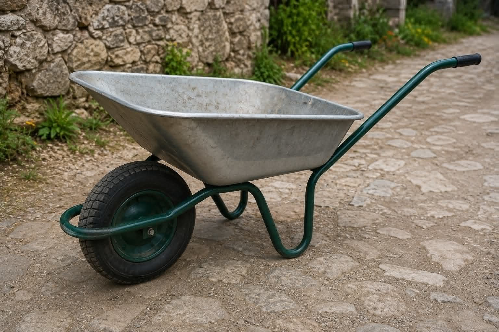
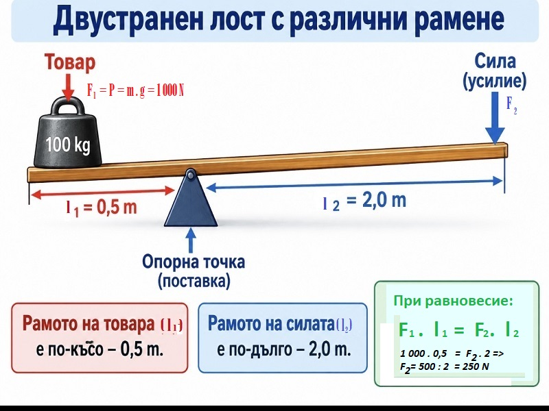
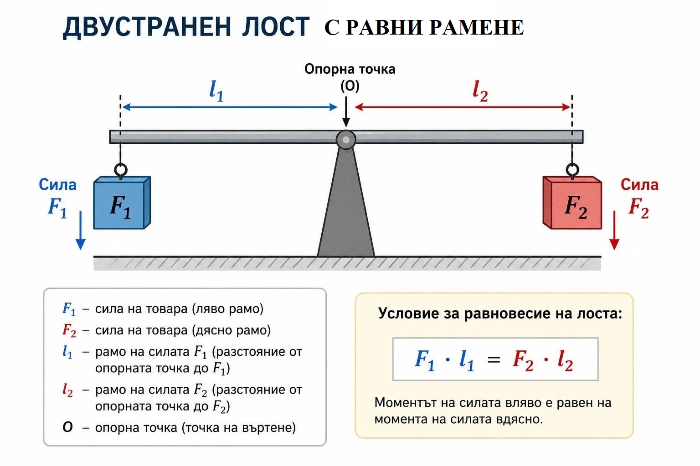
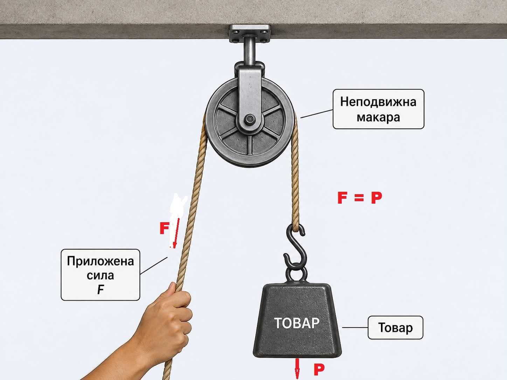
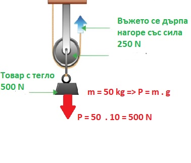
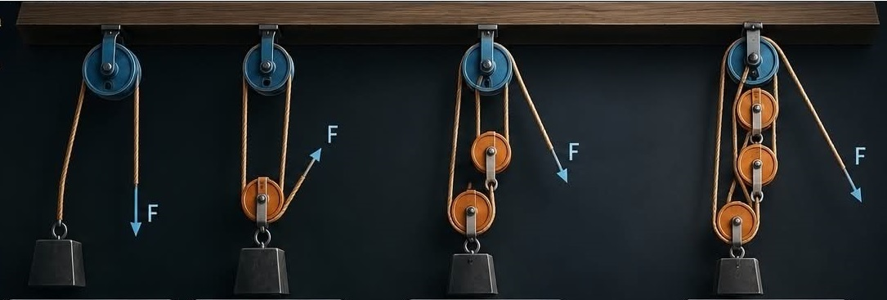

Тест върху прости механизми: лост и макара
Лостът е неогъваем прът, който може да се върти около опорната си ос. Лостът има опорна точка, рамене и приложни точки на силите.
F₁ · l₁ = F₂ · l₂
С лоста се печели най-много сила, когато рамото на силата е най-дълго.
Видове лостове: Едностранни
.

.
и двустранни лостове (с еднакви и различни рамене):
.

.
Елементи на лоста:
.
Примери: лост, колело и ос, макара, наклонена равнина, клин, винт
Това са елементарните градивни механизми, от които се строят по-сложните машини. Историята им датира още от Архимед, който е изучавал лоста, макарата и винта.
.
С лоста се печели най-много сила, когато:
1) товарът е поставен колкото се може по-близо до опорната точка на лоста;
2) силата се прилага колкото може по-далече от опорната точка.Зад.4: Кой от изброените предмети действа като двустранен, равнораменен лост?
1) Макарата представлява колело с шлем, по който минава въже.
2) Макарата е колело с жлези.
3) Въпрос: – Каква величина е силата?(В смисъл скаларна/има само големина/ или векторна/има големина и посока/)
Отговор: – Грамадна.

Макарата е колело с жлеб, по който минава въже. Има два вида: неподвижна и подвижна.
.
Неподвижната макара не печели сила. Подвижната печели два пъти: товар от 50 kg (500 N) се вдига със сила 250 N.
.

Неподвижна макара
.

Подвижна макара
Товарът може да се издигне със сила, която е два пъти по-малка от теглото му.
.

Полиспаст – уред, състоящ се от подвижни и неподвижни макари
.....
Намира широко приложение за повдигане или теглене на тежести. Използва се, както като отделно средство с ръчно задвижване, така и като част от конструкцията на различни устройства – кранове, но най-вече в строителството, за асансьори и др.
.
Особено често се използва във ветроходството, където в голяма степен се разчита на механизми, задвижени изцяло ръчно от екипажа.